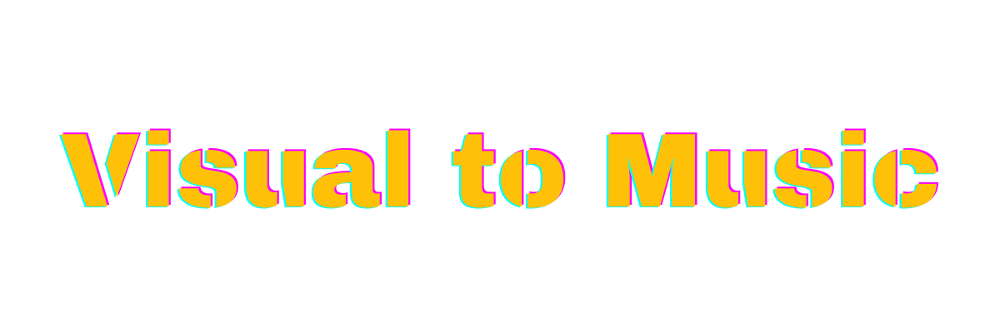

Visual to Music
#About-Site
本Webサイトは、AI技術を用いて静止画を音楽へと変換し、その生成プロセスにおける「変化の度合いや視覚的な特徴」を分析できます。
ユーザーは、元の画像に含まれる色相、彩度、構図といった視覚的特徴が、音の高さ、リズム、音色といった聴覚的特徴にどのようにマッピングされ、変化するのかを具体的に聞き比べることができます。
AI技術の進化の様子を客観的なデータとして比較し、新たなインスピレーションや研究材料を提供します。

Visual to Music
本Webサイトは、AI技術を用いて静止画を音楽へと変換し、その生成プロセスにおける「変化の度合いや視覚的な特徴」を分析できます。
ユーザーは、元の画像に含まれる色相、彩度、構図といった視覚的特徴が、音の高さ、リズム、音色といった聴覚的特徴にどのようにマッピングされ、変化するのかを具体的に聞き比べることができます。
AI技術の進化の様子を客観的なデータとして比較し、新たなインスピレーションや研究材料を提供します。